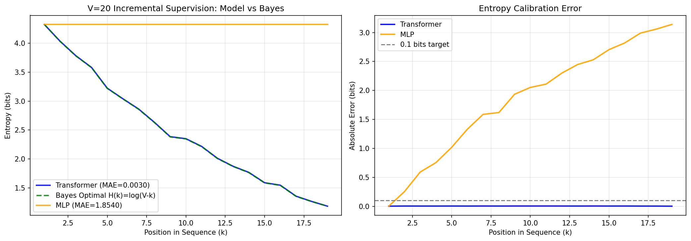
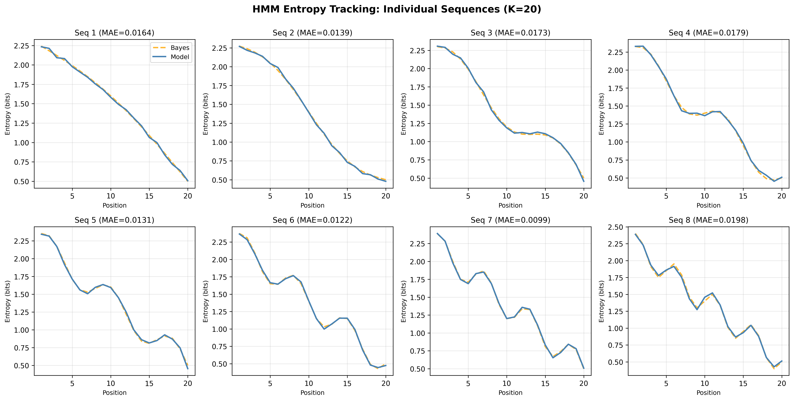

Transformer不是在特定情形下进行贝叶斯推断，而是作为其工作的基本原理。或者说Transformer本质上就是在几何上的贝叶斯推断引擎。该论证工作分为三步进行，首先通过精巧的实验设计，验证Transformers与贝叶斯推断等价，然后解释这种等价性的源头，最后进行结论外推，在更广泛更真实的情境下这种等价性是否存在。
Reference: * The Bayesian Geometry of Transformer Attention * Gradient Dynamics of Attention: How Cross-Entropy Sculpts Bayesian Manifolds * Attention Is Bayesian Inference * Geometric Scaling of Bayesian Inference in LLMs * 优化即几何，几何即推理：用数学终结Transformer的黑盒时代
实验设计
文章提出了贝叶斯风洞实验（Bayesian wind tunnels），一种完全受控的实验环境。通过双射消除和隐马尔科夫模型，验证Transformers等价于贝叶斯推断， residual streams是信念提取、推理是后验更新、注意力提供了文本地址路由。
很有意思的论证过程，通过一个实验完成了Transformers的三个角度叙述： 1. 贝叶斯风洞实验是什么？这种实验设计精巧在什么地方？对模型本身进行了什么裁减，这种裁减是否合理？ 2. 文章接下来描述到几何上面，这里需要考虑几何和Transformers是如何联系的？几何与贝叶斯推断是怎么联系的？ 3. residual streams、 feed-forward networks、attention三个指标是否能完全涵盖Transformers的推理过程么，这是否完备？
理论框架
考虑潜在参数θ ∼ π(θ)，对于每一个任务，从一个特定分布中提取输入数据x，标签写为 y ∼ p(y ∣ x, θ)，模型观测到文本c = {(xi, yi)}i = 1k，并必须从新的输入中给出预测。通过最小化交叉熵损失函数得到模型权重：
ℒ(q) = Eθ ∼ πEc, (x, y) ∼ p(⋅|θ)[−log q(y ∣ x, c)]
最小化交叉熵损失函数就是贝叶斯后验分布： $$\begin{align} &q^\star(y \mid x, c) ~=~ \int p(y \mid x, \theta)\, p(\theta \mid c)\, d\theta \\ &p(\theta \mid c) ~\propto~ \pi(\theta) \prod_{(x_i,y_i)\in c} p(y_i \mid x_i, \theta) \end{align}$$
为验证模型为贝叶斯推断，核心点在于设计实验，通过贝斯推断计算结果并与模型预测结果相比较，一致则说明模型的推理过程为贝叶斯推断。
双射实验
考虑一个双设的任务π : {1, …, V} → {1, …, V}，输入前k − 1个观测𝒪k − 1，预测的输入xk是之前没有训练过的，因此贝叶斯规则变为：
$$\begin{equation} p(\pi(x_k)=y \mid c)= \begin{cases} \dfrac{1}{V-k+1}, & y\notin \mathcal{O}_{k-1},\\ 0, &\text{otherwise}. \end{cases} \end{equation}$$
因此后验熵为： HBayes(k) = log2(V − k + 1)
隐马尔科夫模型(HMM)
考虑转移矩阵$T \in \R^{S\times S}$和估计矩阵$E \in \R^{S\times V}$，以及初始状态π0，当观测到前t步之后，模型后一步的隐藏概率为： $$\begin{equation} \alpha_t(s) ~=~ p(s_t=s \mid o_{1:t}) ~=~ \frac{ E(o_t \mid s) \sum_{s'} T(s \mid s') \alpha_{t-1}(s') }{ \sum_{s''} E(o_t \mid s'') \sum_{s'} T(s'' \mid s') \alpha_{t-1}(s') } \end{equation}$$
因此后验熵为： $$\begin{equation} H_{\text{Bayes}}(t) ~=~ -\sum_{s=1}^S \alpha_t(s)\log_2 \alpha_t(s) \end{equation}$$
实验设计
在两个实验上，对比理论与实验结果的差异： $$\begin{equation} \text{MAE}=\frac{1}{L}\sum_{t=1}^{L} \bigl| H_{\text{model}}(t) - H_{\text{Bayes}}(t) \bigr| \end{equation}$$
双射实验长度为20，选取其中100000条作为测试，前面的输入数据为 [x1, y1, SEP, x2, y2, SEP, …, x19, y19, SEP]
 
总结
回答最开始的问题，风洞实验指的是完全受控的实验环境，在这篇文章中是双射实验和隐马尔科夫模型
理论验证
文章的起源是为什么简单的交叉熵损失函数，可以在大模型中产生独特的几何结构，从而达到贝叶斯推断过程。因此提供了一阶分析，刻画交叉熵重塑注意力机制分数和价值向量。
$$\begin{align} &\frac{\partial L}{\partial s_{ij}} = \alpha_{ij}\bigl(b_{ij}-\mathbb{E}_{\alpha_i}[b]\bigr), \qquad b_{ij} := u_i^\top v_j \\ &\Delta v_j = -\eta\sum_i \alpha_{ij} u_i \end{align}$$
Gradient descent ⇒ Bayesian manifolds ⇒ In-context inference.
核心是通过更新梯度，描述梯度变化在几何上的展现形式。如下图所示，value会被更新到上游u的方向上（图中蓝色与更新方向红色），并且v的联合变化也会回传到整体变化方向g上。
整个过程类似于最大化似然估计(EM)。